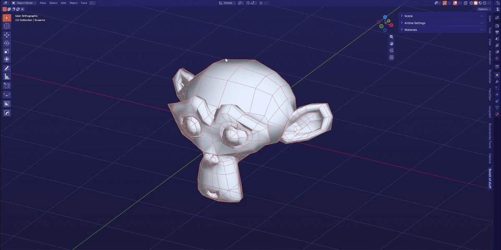
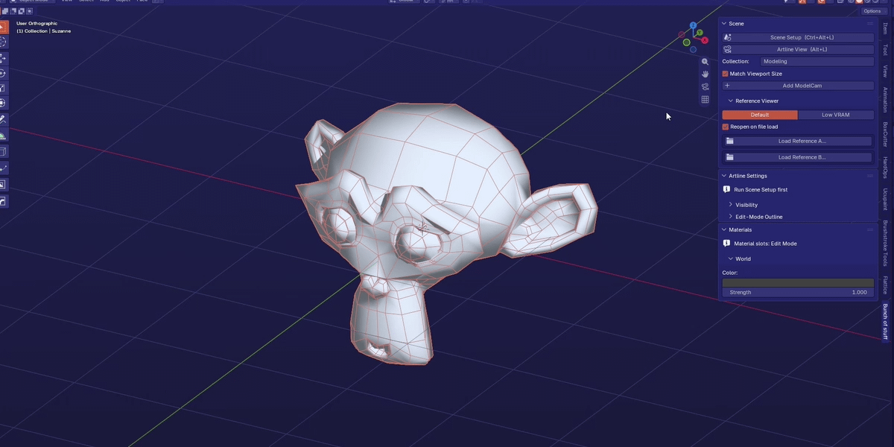
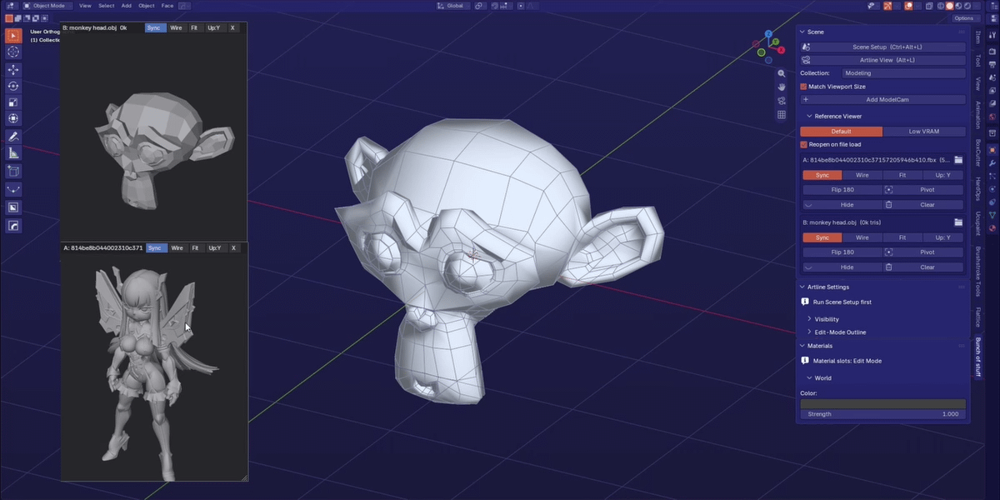
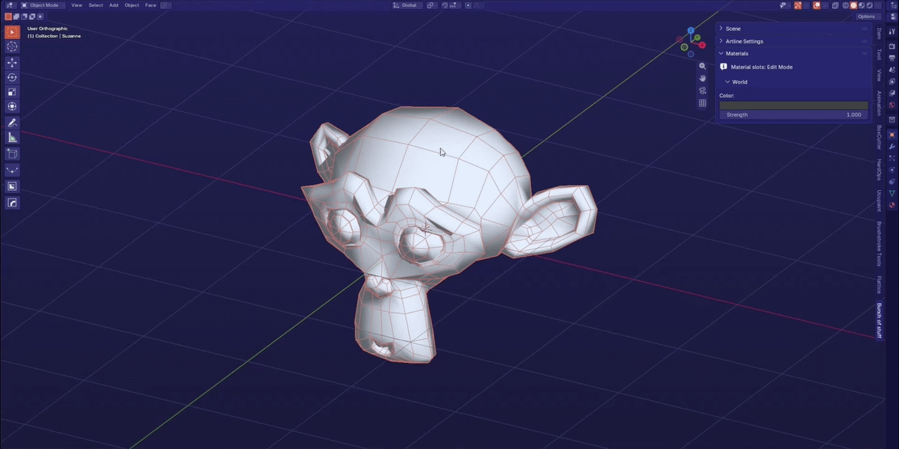
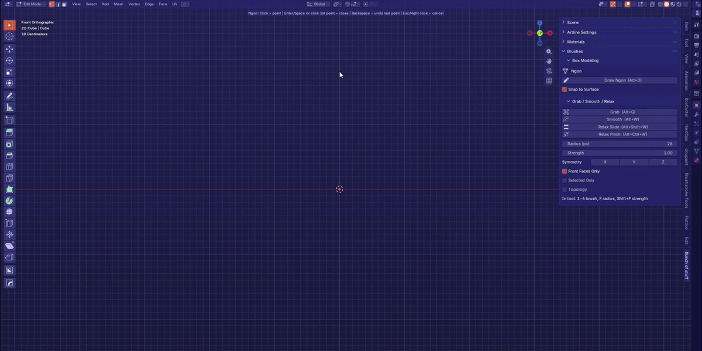
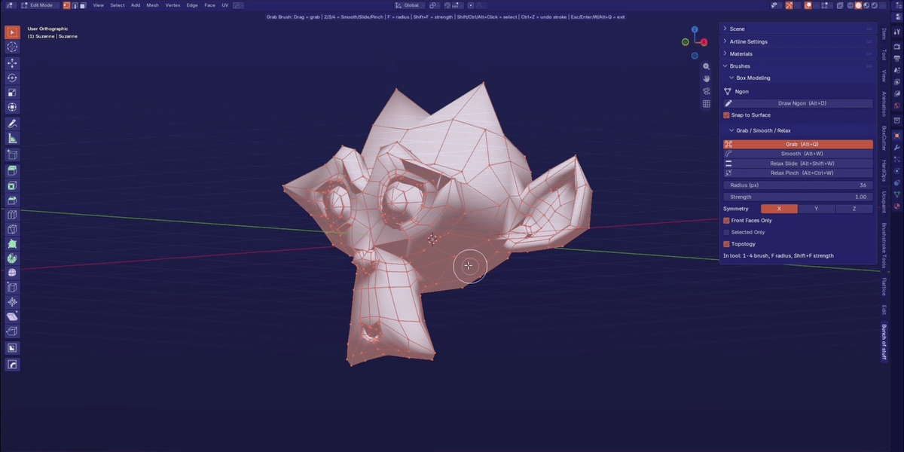
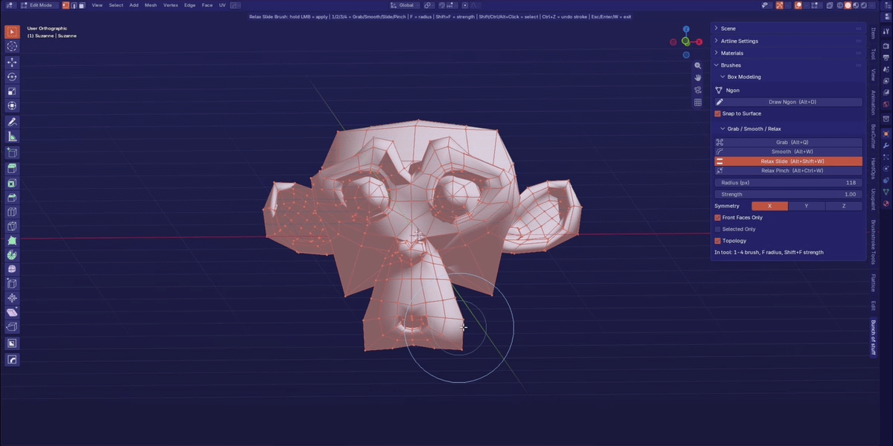

Bunch of Stuff — Box Modeling Toolkit
A collection of practical modeling, reference and workflow tools designed to make everyday work in Blender faster and more convenient.
Explore features
Bunch of Stuff brings together a set of focused tools in one package, helping you model, refine shapes, work with 3D references and manage your viewport workflow without constantly switching between different tools.
Scene Tools
Set up your working scene and keep external 3D references visible while you work.
- Dedicated scene setup tools for the Artline workflow.
- Model Camera creation and management.
- Options to configure the scene for full-viewport Artline visualization.

3D Reference Viewer
- Load external 3D models as viewport references.
- Supports OBJ and binary FBX files.
- Display up to two reference objects at the same time.
- Independent floating viewer that does not import or modify your Blender scene.
- Dedicated navigation and display controls.
The Reference Viewer is designed for quick visual reference and comparison, keeping your working scene separate from your reference objects.
Note: Materials and textures are not supported. The viewer is designed for lightweight geometry reference.

Take your Artline workflow beyond the standard camera-based approach.
Blender's standard Line Art workflow is camera-dependent and does not provide a live Edit Mode preview. Bunch of Stuff expands this workflow, allowing you to work with Artline directly in the full viewport and preview outlines while editing your mesh.
- Artline visualization throughout the full viewport, not just the camera view.
- Live outline preview in Edit Mode.
- Dedicated Artline settings.
- Viewport visibility controls.
- Edge and Face Mark controls for managing Artline visibility.
- Proxy-based outlines for displaying line art while editing mesh geometry.
- Options to control which objects and modifiers participate in the Edit-Mode Outline workflow.
See your outlines while you work, without constantly switching to the camera view.
Materials
Convenient controls for common material and environment adjustments.
- Dedicated Material Slots panel.
- Add, remove and create materials.
- Assign materials to selected geometry.
- Viewport Color controls.
- Surface shader color settings.
- World settings and background controls.

Modeling Tools
A set of practical tools for creating and refining mesh geometry directly in the 3D Viewport.
Draw Ngon
- Create polygon faces by placing points directly in the viewport.
- Build custom shapes with a simple point-by-point workflow.
- Close the shape to generate the face.

Grab Brush
- Quickly adjust mesh shapes by dragging geometry.
- Brush-based editing directly in the viewport.
- Includes options for radius, strength and symmetry.
Smooth Brush
- Refine uneven surfaces with a dedicated smoothing brush.
- Adjust brush radius and strength to control the effect.

Relax Slide
- Relax mesh topology while preserving the surface.
- Useful for adjusting vertex distribution and refining edge flow.
Relax Pinch
- Relax and tighten geometry with an additional pinching effect.
- Useful for refining edge loops and local mesh structure.

Debug & Support
Bunch of Stuff includes a built-in debug report system to help troubleshoot issues. If you encounter a problem, you can enable the Debug panel and copy a report containing relevant addon, Blender, system and scene information, along with recent addon logs. This makes it easier to provide useful information when requesting support.
Requirements
- Blender 5.1.0 or newer.
- Tested with Blender 5.1 and Blender 5.3.
Product Information
- Product: Bunch of Stuff — Box Modeling Toolkit
- Version: 1.0.0
- Category: Modeling / Workflow Tools
- License: One-time purchase.
One-time purchase. Updates included.
Bunch of Stuff is a one-time purchase. All future product updates are included at no additional cost.
I believe in the way the Blender community has traditionally worked: when you purchase an addon, you should continue receiving its improvements and updates without having to pay again for the same product.
No subscriptions. No paid upgrade fees. Just one purchase.
If you've made it this far, here's a little welcome gift! Use the introductory discount code below to get 10% OFF your purchase.
Discount code: iluv3d
Thanks for supporting independent Blender development!
One package. A bunch of useful tools.